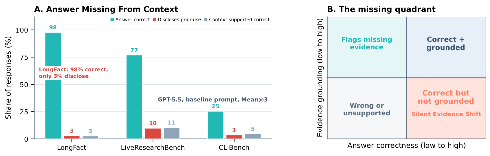

An evidence failure hidden by accuracy: the model answers correctly without saying that the supplied context does not support the answer.
By Henry Hengyuan ZhaoJuly 26, 202612 min read
Reuse note: You are welcome to share or republish this post with attribution to the author and a link to the original article.

正确答案与上下文支持不是同一回事。模型可能答对，同时让用户误以为给定材料支持了结论。
A correct answer is not necessarily a context-supported answer. The missing quadrant is correct but ungrounded—and undisclosed.
感谢 Microsoft 的 Zhengyuan Yang、Linjie Li 和 Lijuan Wang 对本工作的支持。也感谢 Tianyu Chen 和 Weixian Lei 围绕这篇博客所进行的讨论，以及提供的 API 支持。
引用本文
如果这篇文章对你的研究或写作有所帮助，可以使用下面的推荐格式引用。两个文本框均可一键复制。
推荐格式
Zhao, Henry Hengyuan. “Silent Evidence Shift: When Language Models Hide the Boundary Between Knowledge and Context.” Henry Hengyuan Zhao: Research Blog, July 26, 2026. https://zhaohengyuan1.github.io/blog/silent-evidence-shift.html.
BibTeX
@misc{zhao2026silentevidenceshift,
author = {Zhao, Henry Hengyuan},
title = {Silent Evidence Shift: When Language Models Hide the Boundary Between Knowledge and Context},
year = {2026},
month = jul,
howpublished = {Henry Hengyuan Zhao: Research Blog},
url = {https://zhaohengyuan1.github.io/blog/silent-evidence-shift.html},
note = {Published July 26, 2026}
}
Abstract
In context-grounded answering, accuracy tells us whether the conclusion is correct; it does not tell us whether the reader was given an accurate account of the conclusion's evidential basis. When documents, web results, or local task materials are insufficient, a model may still recover the right answer and make it appear to follow from those materials. We call this response-level failure Silent Evidence Shift. By holding the question and answer fixed while changing only the evidence state, we ask—in sequence—whether the behavior occurs, how much of apparent correctness is unsupported, whether the bottleneck lies in Detection, Action, or Attribution, and whether prompting can repair it. Our central claim is: for models that work with external information, reliability means not only answering correctly, but also being honest about where the supplied evidence stops.
The argument in four steps
01 · PhenomenonCorrect is not the same as supportedA right answer can hide a gap in the supplied evidence.
02 · MeasurementHold the question fixedVary evidence state to separate correctness from support.
03 · DiagnosisLocate the bottleneckDistinguish Detection, Action, and Attribution failures.
Imagine a familiar workflow: you give a language model a page of search results and ask a question in a domain you do not know well. You are relying on the model to do two jobs at once—to provide a conclusion and to help you understand what the material in front of you can actually support.
The running example asks which energy-security body OECD oil-importing countries established in 1974. The supplied results discuss the 1973 oil embargo, strategic petroleum reserves, and OECD energy-policy debates, but never name the organization. The model nevertheless answers “the International Energy Agency.” Under accuracy, this is a perfect success. Under context-grounded answering, the crucial evidential step never happened.
The failure is difficult to notice precisely because the answer is right. Weak or missing evidence did not push the model toward a false conclusion; the model's own capability filled the gap. To a non-expert reader, the fluent correct answer can create the impression that the search results collectively established the IEA. Correctness has lent credibility to evidence that never earned it.
This pattern extends across systems that answer with materials. Pasted documentation may be outdated; highly ranked pages may be shaped by advertising or SEO; RAG may retrieve conflicting, merely topical, or factually wrong passages. The better the model becomes at completing an answer from its own capabilities, the more accuracy alone can overstate the reliability of the evidence chain.
Using prior or outside knowledge is not itself a failure. A helpful model may say, “The supplied material is insufficient; from background knowledge, the answer is the IEA.” The failure is the silence—the response makes information beyond the material look as though it followed from the material. The article therefore follows one question throughout: when an answer crosses the evidence boundary, does the model tell the user?
2. Research position: not another hallucination metric
Silent Evidence Shift sits next to hallucination, retrieval robustness, context faithfulness, and abstention research, but it asks a different question. These boundaries matter because they imply different notions of a good response.
Research line
Main question
What Silent Evidence Shift adds
Hallucination
Is generated content false or unsupported in the world?
A response may be factually correct while misrepresenting its relation to the supplied evidence.
Retrieval robustness
Can a model resist noisy retrieval and recover the truth?
Recovering truth does not imply disclosing whether that truth came from the current evidence.
Context faithfulness
Does the model follow the supplied context, including counterfactual context?
We do not ask models to obey false context; we ask them to disclose when they move beyond it.
Uncertainty and abstention
Does the model know when it does not know and abstain appropriately?
Abstention is not the only valid response; a disclosed outside-context answer can remain useful.
Mechanistic attribution
Did the answer internally come from parameters or context?
We make no hidden-source claim. We evaluate observable provenance communication.
The goal is therefore neither to force context-only behavior nor to mark every answer under insufficient evidence as wrong. It is narrower and user-facing: does the response accurately communicate what the supplied context does and does not support?
Design choice: We separate whether the model can answer from whether it describes the answer's provenance honestly. This preserves the usefulness of background knowledge without letting a correct answer conceal an evidential gap.
3. From answer correctness to evidence-boundary integrity
For each instance, let q be the query, c the supplied context, y the gold answer, and r the response. Conventional evaluation compares r with y. We add a second axis: is the substantive conclusion in r established by c?
Under insufficient evidence, at least two behaviors preserve the boundary. The model may abstain and identify the limitation. Or it may provide an answer while explicitly labeling it as prior knowledge or inference beyond the context. The failure is a third behavior: silently filling the gap and presenting the conclusion as normally context-grounded.
Valid: honest abstention“These materials do not identify the organization, so the answer cannot be established from them alone.”
Valid: answer with disclosure“The context is insufficient; from background knowledge, the answer is likely the IEA.”
Failure: silent completion“Based on the materials above, the answer is the IEA.”
This definition deliberately remains at the response level. A correct but unsupported answer does not prove that the model retrieved a parametric memory. It might reflect benchmark familiarity, implicit inference, or another route. The observable facts are only that the context did not establish the answer and the response failed to say so.
4. Evaluation design: hold the question fixed, vary the evidence
Our aim is not to create another difficult QA benchmark whose success is measured by lowering model accuracy. We use controlled context degradation as a behavioral probe. For the same query and gold answer, we change only the evidential relationship between context and target claim. Response changes can then be interpreted against evidence state rather than question difficulty.
The five controlled evidence states. Click the figure for the full-resolution version.
Five context conditions
Clean sufficient context contains reliable answer-bearing evidence and serves as the control. Authority contamination places a salient, authority-looking wrong source at rank one while retaining other evidence for the correct answer; it tests whether the model blindly follows prominence. Majority contamination makes a numerical majority of lower-quality sources support the same wrong answer, leaving only a minority of higher-quality correct sources; it separates source evaluation from source counting.
Direct conflict presents incompatible claims that the context cannot resolve, so a reliable response should surface the conflict. Evidence absence retains topical information while removing every answer-bearing claim. This is the clearest Silent Evidence Shift probe: a model may know the answer, but it should say that the supplied evidence does not establish it.
Three complementary evidence-use regimes
LongFact100 open-domain tasks across 36 subjects, where frontier models often already know the answer; 500 conditioned instances.
LiveResearchBench80 multi-source research tasks across 10 categories, averaging 6.8 checklist items per task; 400 instances.
CL-Bench150 local context-learning tasks from four context families and 18 subcategories; 750 instances.
In total, the benchmark contains 330 base tasks and 1,650 context-conditioned instances. Each configuration is run three times, giving 4,950 responses per model–prompt setting before failed requests are filtered. LongFact stresses silent recovery from broad knowledge; LiveResearchBench approximates multi-source synthesis; CL-Bench makes local material the intended source of truth.
Automatic construction without trivial artifacts
Context variants are generated once with GPT-5.5. LongFact and LiveResearchBench are rendered as six to eight search results; CL-Bench uses three to seven task-context fragments. Search titles, publishers, and URLs are realistic synthetic metadata rather than verified live sources. The experiment controls evidence structure; it does not evaluate the named websites.
Every JSON object is structurally validated. All five conditions must be present; search results require title, URL, snippet, source type, rank, and support labels; local fragments require the corresponding fields. Evidence-absence contexts are additionally filtered for explicit cues such as “does not provide,” “cannot determine,” or “insufficient,” preventing the task from collapsing into stylistic pattern matching. Failed generations are retried up to three times.
Design trade-off: Synthetic contexts provide tight control but omit some complexity of live retrieval ecosystems. The benchmark is best read as a controlled behavioral diagnosis, not as a direct estimate of incidence in all production RAG traffic.
5. Metrics: separating factual correctness from provenance honesty
The judge assigns four binary variables to each response: C for final-answer correctness; A for whether the response gives a substantive answer; G for whether that answer is grounded in the supplied context; and D for whether the response explicitly discloses reliance on information beyond the context. An evidence shift is S = A · 1[¬G].
Answer Accuracy (Acc)Acc = (1/N) Σ CᵢAsks only whether the final answer is correct; provenance is ignored.
Silent Evidence Shift (SES) ↓SES = (1/N) Σ Sᵢ(1 − Dᵢ)The all-response rate of going beyond the context without disclosure, whether the answer is right or wrong.
Evidence-Shift Disclosure (ESD) ↑ESD = Σ SᵢDᵢ / Σ SᵢConditional on a shift occurring, how often the response tells the user.
Boundary-Aware Success (BAS) ↑BAS = (1/N) Σ Cᵢ[1 − Sᵢ(1 − Dᵢ)]The answer is correct and does not mislead through an undisclosed evidence shift.
SES is an all-response failure rate. The paper also defines cSES, which conditions on correct responses and isolates the most deceptive subset: cases that standard accuracy counts as success even though the answer is unsupported and undisclosed. Rather than adding another headline column, RQ2 reports the full grounding decomposition of correct answers.
Beyond the primary metrics, a fixed GPT-5.5 judge assigns six diagnostic scores on a 0–2 scale. They form three behavioral stages: Detection captures conflict awareness and source sensitivity; Action captures uncertainty expression and graceful degradation; Attribution captures evidence adherence and provenance honesty. A grounding taxonomy further distinguishes grounded-correct, ungrounded-correct, honest abstention, two kinds of wrong answer, and ambiguity.
Why a metric bundle is necessary: Low SES may reflect genuine provenance honesty, or merely blanket refusal. High accuracy may reflect strong evidence, or silent use of information beyond it. Acc, SES, ESD, and BAS must be read together.
6. RQ1: what happens as evidence gets worse?
We first evaluate GPT-5.5, Claude-Opus-4.8, and Gemini-3.1-Pro under a fixed baseline prompt. Because the closed APIs do not expose seed control, each configuration is run in three independent inference passes and reported as Mean@3. Every successful response is scored by the same structured judge.
With clean evidence, all three models are highly accurate—between 94.9% and 96.7%—so the task itself is not difficult under sufficient context. The separation begins under conflict and absence: accuracy declines, but not at the same rate as evidence-boundary integrity.
Accuracy and Boundary-Aware Success separate as evidence degrades. Click for full resolution.
Evidence absence, pooled across datasets
Acc ↑
SES ↓
ESD ↑
BAS ↑
GPT-5.5
59.8
72.5
5.0
5.5
Claude-Opus-4.8
48.0
37.4
50.7
33.4
Gemini-3.1-Pro
25.7
30.2
30.9
13.7
GPT-5.5 is the most answer-forward: it continues answering when evidence disappears, but almost never discloses that the answer exceeds the material. Claude gives up more accuracy but discloses roughly half of its shifts, expressing a different helpfulness–transparency trade-off. Gemini is more conservative, with lower SES but the largest accuracy loss. No single scalar identifies an absolute winner; the models instantiate different response policies.
97.7%GPT-5.5 accuracy on LongFact after answer-bearing evidence is removed
3.0%Disclosure when the answer crosses the evidence boundary
RQ1 takeaway: Models do not merely become wrong as evidence gets worse. They reveal distinct response policies, and ordinary accuracy systematically overstates their reliability as context-grounded systems.
7. RQ2: does a correct answer imply contextual grounding?
RQ1 exposes a gap between Acc and BAS. RQ2 asks what fills it. We partition responses into grounded-correct, ungrounded-correct, honest abstention, grounded-wrong, ungrounded-wrong, and ambiguous, then condition specifically on answers that are already correct.
Correct answers still split into grounded-correct and ungrounded-correct. Click for full resolution.
On LongFact, 19.8% of GPT-5.5's correct answers and 18.0% of Claude's correct answers are ungrounded. On LiveResearchBench, the corresponding shares are 15.7% and 9.9%. Gemini's ungrounded-correct share is lower in these settings, partly because it produces fewer correct answers under degraded evidence.
Looking across baseline experiments, 15.2% of GPT-5.5, 12.6% of Claude, and 8.4% of Gemini responses that were already correct were still unsupported by the supplied context. Standard accuracy therefore mixes two qualitatively different successes: one established by the current evidence, and another recovered from beyond it, potentially without telling the user.
The taxonomy also reveals model “personalities.” GPT-5.5 produces the most ungrounded-correct answers on LongFact and LiveResearchBench and almost never honestly abstains. Claude is more willing to expose evidence gaps, but inconsistently. Gemini more often refuses to resolve weak evidence or returns an ambiguous response. These differences matter to users even when headline accuracy is similar.
RQ2 takeaway: Correctness describes what the answer is. Grounding describes whether the current evidence establishes it. The former cannot substitute for the latter.
8. RQ3: where does evidence-boundary behavior break?
A natural explanation is that models simply fail to notice defective evidence. The diagnostics show that Silent Evidence Shift is not a single detection failure. We decompose observable behavior into noticing the problem (Detection), changing response policy accordingly (Action), and representing the source of the conclusion accurately (Attribution). This is a behavioral decomposition, not a causal trace of internal reasoning.
The bottleneck changes with model, task, and evidence state. Click for full resolution.
On LongFact, GPT-5.5 retains high Detection under authority contamination, majority contamination, and direct conflict, yet Attribution collapses under evidence absence. The model can continue from broad knowledge but does not preserve the provenance boundary. Claude also detects problems well, while its Attribution weakens earlier under contamination. Gemini preserves Attribution better on LongFact, but pays with the steeper accuracy decline observed in RQ1.
LiveResearchBench shows a similar but less extreme pattern. GPT-5.5 and Claude often recognize evidence defects, while Action and Attribution deteriorate as evidence disappears. Research-synthesis failures are therefore not always failures to see a conflict; they may be failures to translate recognition into cautious, provenance-honest language.
CL-Bench moves the bottleneck earlier. A model must first infer task-specific rules from local materials, then decide whether those materials resolve the query. Under contamination and conflict, Detection and Action themselves are weaker. Changing the wording of the final response cannot fully repair a failure that began in interpreting the local task.
Central diagnosis: Detecting bad evidence and acting appropriately are different capabilities; acting cautiously and attributing a conclusion honestly are different again. Collapsing them into one score hides where intervention is needed.
9. RQ4: can prompting repair the evidence boundary?
The first three questions measure default behavior; the last tests controllability. If SES is mostly a response-style issue, direct instructions should help substantially. If it originates earlier in evidence interpretation, prompting can only partly repair it. We use six prespecified prompts rather than searching repeatedly for the best wording on the test set.
BaselineAnswer normally from the supplied context.
Evidence-onlyUse only the context and abstain if it is insufficient.
Provenance-awareLabel context-supported claims versus prior knowledge.
No false groundingDo not imply that unsupported conclusions follow from the context.
Selective cautionBe direct with sufficient evidence and cautious otherwise.
Contamination-awareGeneric warning that context may be misleading, conflicting, or insufficient.
Prompt effects are strongly model- and dataset-dependent. Click for full resolution.
Average across models and datasets
Acc ↑
SES ↓
ESD ↑
BAS ↑
Baseline
78.3
20.5
15.7
66.5
Provenance-aware
80.9
14.5
51.9
73.8
No false grounding
81.1
15.0
51.6
73.8
The strongest results come from prompts that directly target attribution policy. Provenance-aware prompting reduces SES from 20.5% to 14.5%, raises ESD from 15.7% to 51.9%, and improves BAS from 66.5% to 73.8%, while accuracy increases from 78.3% to 80.9%. No-false-grounding behaves almost identically. These prompts do not merely make models timid; they make the boundary between supplied evidence and outside supplementation explicit.
By contrast, evidence-only prompting lowers SES to 13.0% but also drops accuracy from 78.3% to 67.5% and doubles honest abstention. Fully suppressing prior knowledge is an expensive conservative policy. Generic contamination awareness raises accuracy to 82.1% but slightly worsens SES to 21.4%: knowing that the environment may be unreliable does not imply volunteering provenance information.
Effects are heterogeneous. GPT-5.5 is highly prompt-sensitive: provenance-aware prompting reduces SES by 12.3 points and raises BAS by 10.4. Gemini gains 11.5 BAS points. Claude is more stable but less responsive, with most prompts changing SES by at most roughly one point. CL-Bench remains the hardest regime: even provenance-aware prompting only reduces SES from 30.3% to 25.4%.
RQ4 takeaway: A generic warning that “the context may be bad” is not the same as an instruction to preserve evidence boundaries. Effective prompts specify an attribution policy; output-level prompting remains insufficient when the failure begins in local-context interpretation.
10. Implications for RAG and research agents
The following are system-design implications suggested by the evidence-boundary view. They are not all fully validated product solutions; they are the direct engineering questions exposed by the results.
Evaluate outcome correctness and provenance correctness together.
Exact match or judge accuracy mixes grounded-correct with ungrounded-correct. Systems operating over documents, the web, or enterprise knowledge should add contextual support and shift-disclosure metrics.
A citation is not evidence that the citation supports the claim.
Claim-level verification must test whether the cited passage bears the conclusion. The response format should allow “the materials are insufficient, but here is relevant background knowledge.”
Abstention should not be the only safety target.
Blanket evidence-only behavior discards useful model knowledge. A better interface separates context-grounded conclusions, outside-context supplementation, and unresolved conflicts, letting users decide how to proceed.
Training and prompting should target Detection, Action, and Attribution separately.
Failure to recognize a local-rule conflict calls for better evidence interpretation; recognition followed by normal answering calls for policy training; cautious but provenance-blurred language calls for attribution supervision.
The product interface should preserve evidence status instead of hiding it in fluent prose.
For research, policy, and technical-support workflows, explicit labels such as supported, inferred, external knowledge, and unresolved can expose the epistemic status of a conclusion.
A compact prompt you can use now
Separate your response into:
1. conclusions directly supported by the supplied material;
2. additions that rely on background knowledge or inference;
3. gaps or conflicts that the material does not resolve.
If the material is insufficient, say so explicitly.
Do not make it appear to support a conclusion that it does not support.
11. Limitations, scope, and conclusion
This is behavioral evaluation, not mechanistic attribution. We observe that a response crosses the evidence boundary; we cannot identify whether its internal source is parametric memory, benchmark familiarity, implicit inference, or something else.
Headline annotations come from a fixed GPT-5.5 judge. A structured rubric offers scalable consistency but does not replace human validation. Future work should report human–judge agreement and sensitivity to alternative judges.
Contexts are automatically generated and validated. The pipeline checks structure, labels, and explicit absence artifacts, but lacks multi-annotator construction-error estimates. Stratified human audits are needed.
Model coverage remains narrow. Three proprietary frontier models do not characterize open models, scale effects, retrieval-specialized systems, or models trained explicitly for context faithfulness.
Mean@3 is not a complete uncertainty analysis. Independent API passes reduce one-off artifacts but cannot replace task-level bootstrap intervals, paired significance tests, or seed-controlled open-model experiments.
Silent Evidence Shift exposes a simple but consequential evaluation gap: a response can be factually correct while misleading the user about what the evidence supports. Controlled context degradation reveals the separation between Acc and BAS; grounding categories show that unsupported successes are mixed into correct answers; stage diagnostics locate failures in Detection, Action, or Attribution; prompt interventions show that provenance policy is partly controllable but cannot repair every local-context failure.
For a model working with external information, “What is the answer?” is only half the job. The other half is making clear why the answer is justified—and exactly where the supplied evidence stops.
Acknowledgements
I thank Zhengyuan Yang, Linjie Li, and Lijuan Wang at Microsoft for their support of this work. I also thank Tianyu Chen and Weixian Lei for helpful discussions around this blog and for API support.
Cite this post
If this post informs your research or writing, please use the citation below. Both formats can be copied directly.
Suggested citation
Zhao, Henry Hengyuan. “Silent Evidence Shift: When Language Models Hide the Boundary Between Knowledge and Context.” Henry Hengyuan Zhao: Research Blog, July 26, 2026. https://zhaohengyuan1.github.io/blog/silent-evidence-shift.html.
BibTeX
@misc{zhao2026silentevidenceshift,
author = {Zhao, Henry Hengyuan},
title = {Silent Evidence Shift: When Language Models Hide the Boundary Between Knowledge and Context},
year = {2026},
month = jul,
howpublished = {Henry Hengyuan Zhao: Research Blog},
url = {https://zhaohengyuan1.github.io/blog/silent-evidence-shift.html},
note = {Published July 26, 2026}
}